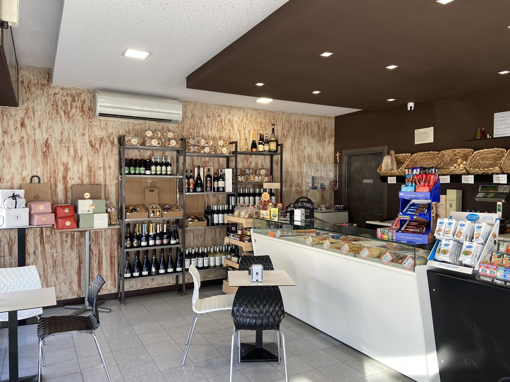

Il locale
Dentro c'è
tutta la giornata.
Un bancone, qualche tavolo e l'atmosfera che nasce dalle persone.

Uno spazio reale
Costa Caffè
Un posto curato, senza prendersi troppo sul serio.
Scaffali pieni di bottiglie, il banco sempre in movimento, tavoli per una pausa e un angolo dove fermarsi. Questa è la fotografia disponibile oggi del locale.
La galleria verrà ampliata con nuove fotografie reali dell'attività.
01
Il bancone
Foto reale disponibile02
Il tuo tavolo
Spazio per una nuova foto03
La prossima pausa
Spazio per una nuova foto